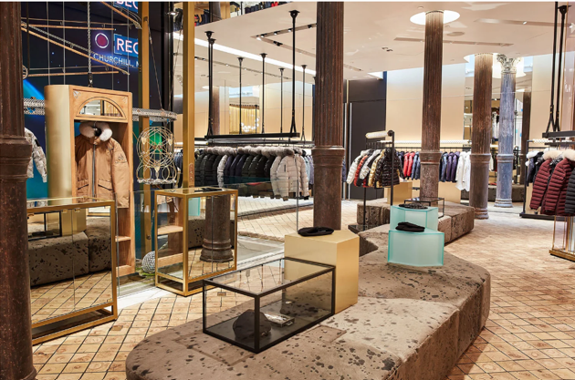

December 17, 2019
"We interviewed a lot of different firms, and some of the ideas presented have been done before. We felt Steve O'Neil and his firm's ideas really connected with our brand DNA, and how we wanted to connect with our U.S customers-especially for our first U.S store. We wanted a firm to think differently, be adventurous and take risks, and Steve was willing to do that with us. We didn't feel the need to provide any directives for this partnership, as Steve really understood the brand and what we needed for this market. "